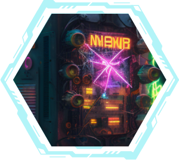
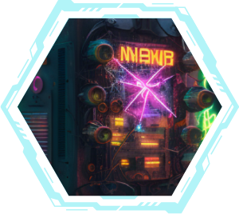

Le joueur commence au point de départ, le "Commissariat".
Le joueur peut effectuer deux actions par tour : soit un déplacement et une découverte, soit
deux déplacements.
Les joueurs doivent se déplacer sur les différentes cartes du plateau pour trouver les
indices nécessaires au désamorçage de la bombe.
Certains quartiers ont des particularités et des défis à relever pour les joueurs.
Si un joueur se rend dans une banlieue, il peut être envoyé en prison et ne pourra être
libéré que si un coéquipier le rejoint sur sa case.
Les joueurs ne peuvent pas se déplacer sur une carte qui a déjà été découverte, à moins
qu'une carte événement ne l'indique. Cela empêche les joueurs de passer d'un quartier à
l'autre en un seul tour, sans avoir à résoudre les énigmes de chaque carte.
Lorsqu'un joueur découvre une carte, il doit la retourner pour que les autres joueurs
puissent voir les informations qui y sont affichées. Cela permet aux autres joueurs de voir
les indices découverts et de mieux coordonner leurs actions.
Les joueurs doivent collaborer pour trouver les indices et résoudre les énigmes. Les joueurs
peuvent échanger des informations et coordonner leurs mouvements.
Si les joueurs ne parviennent pas à désamorcer la bombe avant que le temps ne s'écoule,
celle-ci explose et le jeu est perdu.
Si les joueurs réussissent à désamorcer la bombe avant la fin des 50 tours, ils gagnent.
Chaque joueur doit respecter les deux actions par tour, soit un déplacement et une
découverte, soit deux déplacements. Si un joueur oublie une action, il ne peut pas la
récupérer par la suite.
Si un joueur se retrouve dans une situation où il ne peut plus se déplacer, soit parce qu'il
est emprisonné dans une banlieue, soit parce qu'il est bloqué par un obstacle, il ne peut
pas faire d'actions supplémentaires pendant ce tour. Les autres joueurs peuvent tenter de le
libérer ou de trouver une solution pour le débloquer.
Si un joueur doit quitter le jeu en cours de partie, le reste des joueurs peut continuer
sans lui, mais cela peut compliquer la coordination des actions et augmenter la difficulté
du jeu.
Les joueurs ne peuvent pas échanger de cartes entre eux, mais ils peuvent échanger des
informations et des idées pour résoudre les énigmes.
 
